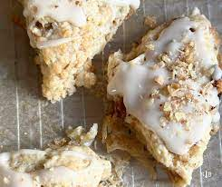

Maple Walnut Scones

A tasty breakfast treat consisting of dense crumbly goodness, topped with creamy vanilla icing and crisp, chopped walnuts.
Ingredients
- Scones
- 1/2 cup Chopped Walnuts
- 1 3/4 cup Flour
- 1/2 cup Sugar
- 1 tablespoon Baking Powder
- 1/2 teaspoon Salt
- 6 tablespoons Butter
- 1 Egg
- 1/3 cup Heavy Cream
- 1 teaspoon Maple Extract
- 1 teaspoon Vanilla Extract
- Glaze
- 1/2 cup Powdered Sugar
- 2 tablespoons Heavy Cream
- 1/4 teaspoon Maple Extract
Steps
- Preheat over to 375 degrees.
- Toast walnuts in the oven for 8 minutes then let them cool for 10 minutes.
- Mix together flour, sugar, baking powder, and salt. Then cube the butter and add it to the mixture. Cut in the butter with a pastry blender until it resembles large crumbs. Add the toasted walnuts and stir.
- Mix together eggs, cream, maple extract, and vanilla extract. Stir the wet ingredients into the flour mixture and mix till a dough is formed.
- Pat the dough into a round of about 8 inches in diameter and 1/2 inch thick. Cut into 8 wedges. Place each wedge on a baking sheet and keep 2 inches between scones. Refrigerate for 15 minutes.
- Transfer to the oven and bake for 18 minutes, then cool for 10 minutes on the baking sheet. Then cool for 30 minutes on a baking rack
- For the glaze, mix the powdered sugar, cream, and maple extract in a bowl.
- Drizzle the glaze on the cooled scones.